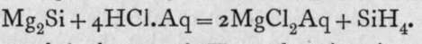
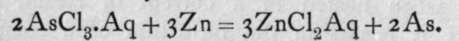
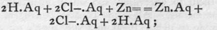
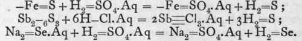

Classification Of Compounds. Part 3
Description
This section is from the book "Modern Chemistry", by William Ramsay. Also available from Amazon: Modern Chemistry: Theoretical and Modern Chemistry (Volume 2).
Classification Of Compounds. Part 3
(*/) Most of the hydrides can be prepared by the fourth method-the interaction of compounds. The decomposing agent is either water, an acid, or an alkali.
( i) Water :-Marsh-gas, CH4, ethylene, C2H4, acetylene, C2H2, ammonia, NH3, and phosphoretted hydrogen, PH3, may be produced by the action of water on some compounds of carbon, nitrogen, and phosphorus. Aluminium carbide, A14C3, yellow transparent crystals produced by heating a mixture of carbon and oxide of aluminium to whiteness in the electric furnace, on treatment with water yields pure methane, A14C3+ 12H2O = 3CH4 + 4Al(OH)3. Manganese carbide, black crystals produced by heating in the electric furnace a mixture of manganese oxide and carbon, yields a mixture of equal volumes of hydrogen and methane, Mn3C + 6H2O = 3Mn(OH)2 +CH4 +H2. Lithium, calcium, strontium, and barium carbides also formed in a similar manner in the electric furnace yield acetylene with water, Li2C9 + 2H0O = 2LiOH + C9H2 ; CaC2 + 2H2O = Ca(OH)2 + C2H2.'J The carbides of cerium, CeC2, lanthanum, LaC2, yttrium, YC2, and thorium, ThC2, yield a mixture of methane, ethylene, C2H4, and acetylene, sometimes mixed with hydrogen; and uranium carbide, U2C2, gives methane, ethylene, and hydrogen, but no acetylene.
Magnesium or calcium nitrides, prepared by heating metallic magnesium or calcium in a current of nitrogen, yield ammonia with water : Mg3N2 + 6H2O = 2NH3 + 3Mg(OH)2, and calcium phosphide, produced by heating lime with phosphorus, on treatment with water similarly gives off phosphoretted hydrogen : Ca3P2 + 6H2O = 3Ca(OH)2+2PH3. The sulphides of magnesium and aluminium, MgS and A12S3, are also decomposed by water, with production of hydrogen sulphide and the hydroxide of the metal: MgS+ 2H.OH = Mg(OH)2 +H2S; A12S3 + 6H.OH = 2Al(OH)p + 3H2S.
The halides of a certain number of elements are at once decomposed by water with formation of a hydride of the halogen and a hydroxide of the element. Boron, silicon, titanium, phosphorus, sulphur, selenium, and tellurium chlorides, bromides, and iodides are thus resolved. The method is practically made use of in preparing hydrogen bromide, HBr, and iodide, HI, by help of phosphorus. But the previous preparation of phosphorus bromide or iodide is unnecessary. It is sufficient to add bromine to water in contact with red phosphorus, and hydrogen bromide is evolved; or to warm a mixture of iodine, water, and red phosphorus. The use of yellow phosphorus is not advisable, for the action is apt to take place too violently if it be used. It may be supposed that the phosphorus and halogen unite to form the pentahalide, which is then immediately decomposed by the water, thus : PBr5(or PI5) + 4H2O = H3PO4 + 5HBr(or 5HI). The gaseous hydride may be collected over mercury or by downward displacement, or it may be dissolved in water and a solution of hydrobromic or hydriodic acid prepared.
A commercial method of producing hydrogen chloride, HC1, depending on the decomposition of magnesium chloride when heated in a current of steam, has been patented; it results in the formation of a compound of oxide and chloride of magnesium, while the hydrogen of the water unites with a part of the chlorine; the resulting gaseous hydrogen chloride is passed up towers, and comes into contact with water, thus yielding a solution of hydrochloric acid.
( 2) In many cases the compound from which the hydride is formed is not decomposed by water ; an acid, generally hydrochloric acid, must be present. The reason of this is not easily explained ; it may be that the very few ions of H and -OH present in water are sufficient to effect the decomposition in some cases and not in others, and that when an acid is necessary the much larger number of ions of hydrogen present in its solution is required; also it is known that the heat evolved during the decomposition of those compounds which are altered by water is greater than that which would be evolved by those which resist its action were they to be attacked by water. Many hydrides are prepared by the help of acids. Magnesium boride, Mg3B2, yields with hydrochloric acid a trace of BH3; but as this compound is a very unstable gas, almost all of it decomposes into boron and hydrogen. The similar compound, Mg2Si, produced by heating a mixture of silica and magnesium powder to redness, when mixed with hydrochloric acid yields hydride of silicon, SiH4, as a colourless, spontaneously inflammable gas:-

Arseniuretted hydrogen, AsH3, and antimoniuretted hydrogen, SbH3, are prepared from sodium or zinc arsenide or antimonide: Na3As + 3HCl.Aq = 3NaCl.Aq + AsH3; Zn3Sb2 + 6HC1. Aq = 3ZnCl2. Aq + 2SbH3. These gases, however, may be obtained mixed with hydrogen if a solution of oxide of arsenic or antimony in hydrochloric acid, which yields chloride of arsenic or antimony, is treated with zinc. The first change is the replacement of the zinc by the arsenic or antimony, thus: -
Electrically neutral zinc replaces positively charged arsenic, itself becoming positively charged. The arsenic and the unattacked zinc form a couple, and the hydrochloric acid is electrolysed,
 the hydrogen ion unites with the arsenic, negatively charged in the electric couple, forming electrically neutral hydride of arsenic, which escapes as gas, 3H + As.= = AsH3. An element in this form, capable of combination at the moment of liberation, is said to be in the nascent state, a word derived from "nascere," to be born. It differs from an ordinary element in being on the point of losing or gaining an electron, and it may either be evolved in the free state by combining with itself, as -H + -H = - H-H, or it may enter into some other form of combination, as in the case explained. This process of preparing arsenic or antimony hydride is used as a test for the elements arsenic or antimony. It was devised by Marsh, and as the hydrides are very easily decomposed by a high temperature, the gas, if caused to pass through a red-hot tube, is decomposed, giving a deposit of arsenic (grey) or antimony (black). The former is more easily oxidised than the latter, and dissolves in a solution of bleaching-powder, in which the latter is insoluble. This process is particularly applicable where poisoning with arsenic or antimony is suspected.
H2S, H Se, H2Te.-Hydrogen sulphide, selenide, and telluride are prepared by treating a sulphide, selenide, or telluride with dilute sulphuric or hydrochloric acid:

Continue to: